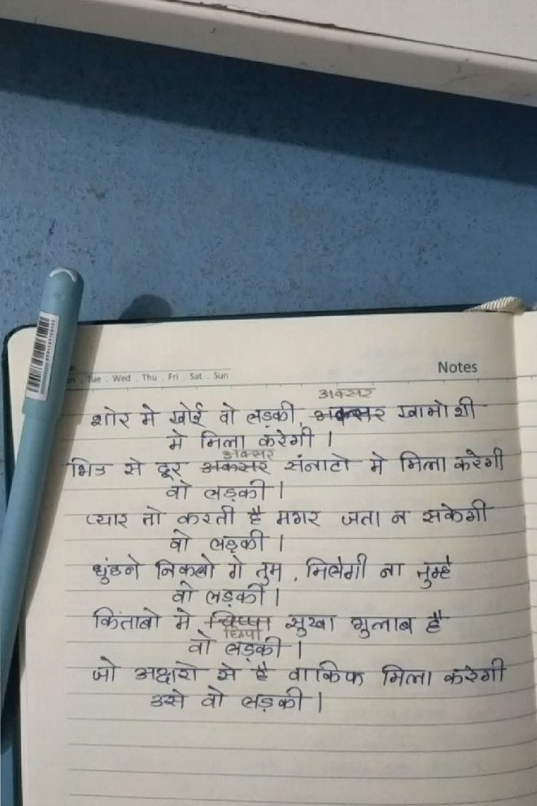

File: hin_sample_12.jpg

अवसर शोर में खोई वो लड़की, अक्सर खामोशी में मिला करेगी। भीड़ से दूर अक्सर सन्नाटो में मिला करेगी वो लड़की। प्यार तो करती है मगर जता न सकेगी वो लड़की। ढूंढ़ने निकलोगे तुम, मिलेगी ना तुम्हे वो लड़की। किताबो में छिपा सूखा गुलाब है वो लड़की। जो अक्षरों से है वाकिफ मिला करेगी उसे वो लड़की।
Notes 100% COTTON CARE: DRY CLEAN ONLY शोर मे खोई वो लड़की, अक्सर गानो शी मे मिला करेगी । भिड से दूर अक्सर संनाटो मे मिला करेगी वो लड़की । प्यार तो करती है मगर जता न सकेगी वो लड़की । धुंधने निकलो गे तुम, मिलेगी ना तुम्हें वो लड़की । किताबो मे विप्सा मुखा गुलाब है वो लड़की । जो अक्षरो मे है वाकिफ मिला करेगी उसे वो लड़की । ಳ
a Notes | शोर मे ad वो लडकी >कब्लर ares मे निला करेगी | fers से दूर Baste Zitat भे fall कौरैशी at लडकी | _ व्यार ar करती हैं मशर ऊता or ee ar लड़की । शक न धुंढने निकनो गे तुम , मित्रेगी ना oe _ वो लड़की | = किताबो मे aca Spay alent Se _ at esa} | a a stg के ४ वाकिफ भमित्ता कंडेगी | aay तो सड़की-] —= जन जज __ न —— ~~
मणि Oe a बहा 0 8 _ ESSE fo Tt oo vot a at o ya totems oa आह “२... कि a . an a cr sy ee कि आय a EA ere i बा OT TSS Bite ES LO a 4 es Wiety Wie e eo Sy मम ee OR aa कट 7 oe, a rhe are ee Rees eg या निज DEE TOS COR UR SQ PT beat has! हद हट हरी ae tee 0 का वश ee, Dee OEE ES OS Te A ae nh ee Bre पर व पक 5, bos othe Shale eg A SSE SR Da SC नील निया, a teks [oo ERE कि है or कुक हब न eee Se gar ETE जा ty बाप रे मई का BE bes 077 RUSE, 5 cae te GON tg te जल oh veers peak SL 3 eh ee ee AS a ep ve aa: re 20002 शी अं ad AB LOTS ERS 8 Se ae eee oR BAH UE oh tae TE 7 पाप eal पा Sa bes “TEM yet 7 maaan Ve BOE ag ene एप Doe PU Ng i eo काया ee rr! पल RTT ERENT | Lip, उधर hme et alte OP Beth he el ! = iy 4 aH १ at i ~— oe o 7 ae | nt SH eee wo 3 So BLO Bory aan आप i a ee treet { Heer peers Ge तो esol sees ae | Bop > ‘f 7 ‘ONIN a: mrs ae Ae (टी सर कर Serene be poke A ces : a = st Ra rey 273 कट aia a a _ paral a = seit pac से Bs - | oe / —— aT elsaot =| To es ~ ee | 7 Tea cord Sra ord aoe ways SN TAS जता का अकेजञी 7 | a FE eee! al jeasts oh se cea Ee ar sr po weal : cat as Ser गे लत Es पे: — Heal ie ara : <P “ | ne Gale निकली ire |! ता शजत | SICA IE. OU OE: te Te AES a | re an ‘{ । jo Tae Ager aa al Betis ed a eS aT as ay eh AE “| Wi | WETS, se ania FEN eS Pate sat + |}, हमें छारी ear Sus मित्ती करेंगी _ oa a aan लडकी: = i en
Notes Wed Thu निला करेगी मे निता करेैगी सनाटा से सकेगी कर्ती ६ मगर जत| वा ता कताता गलाब झरेगी मिल्ा
❌ OCR Failed
चतुत्व
तीा मखिते गाप थि रगी गणा पिषिटिई डाबिन्वानर श्ालू मे खोरे ग वो लड़वरी अक््व्र ग्वामाशी मे निला कुरेगी ई हंड्वशर गंभषेड् रतने छुइईू उन-्बक्रल्ट् खंबवाटो मे निला करेगी बा वहवंरंी बो ड़्ष्री व्याऱ तो बरती है मगार जता ब सवेरगी धुंहने निकूखो गे ना म तुम मि्े्गी तुम्ह बो जड़वंठों। किंताबो मे नन्द्रिष्षा खुख्ा घुलाब है वा छिपोट भड़ंकंो जो आध्कव्यो सेहे बाकिेफ मिला करेगी उनसने वो वड़की
क भर खामोशी शोरमे शोर ग खोर क लउकी करेगी। भसर म तिला ग संनाटों ग मिला करेगी गं ग क क अकसर बड़की। पार ग कारती ग मगर जतानसकेगी जेत। संकेगी थुंठने निकतों त ंशकी त तम मिवेगी न तुम् किंतांबों त क लड़कोाँ। किपा ग ग क बडकी। तडकी सुथ्वा गुलाब तं जॉ अक्षंश ग ग वा्किफ मिला करेगी उ ग तड़की।